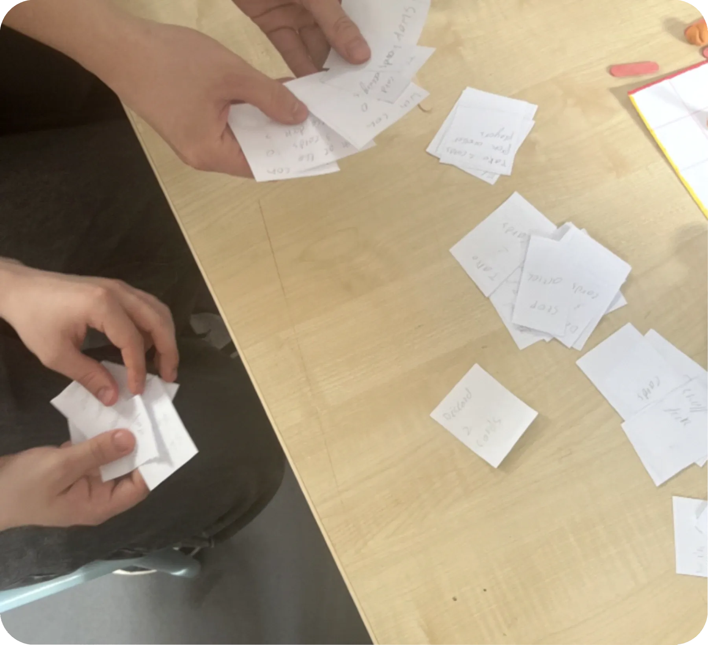
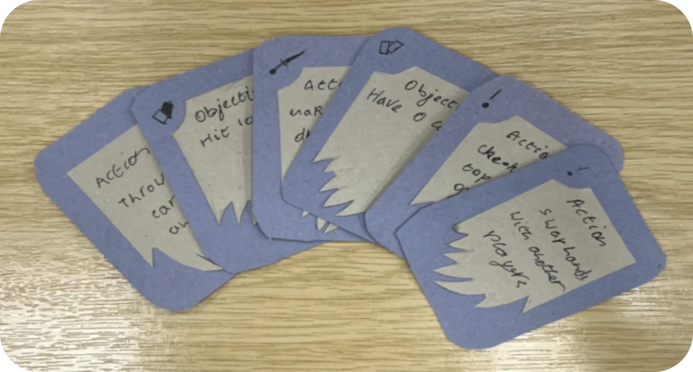
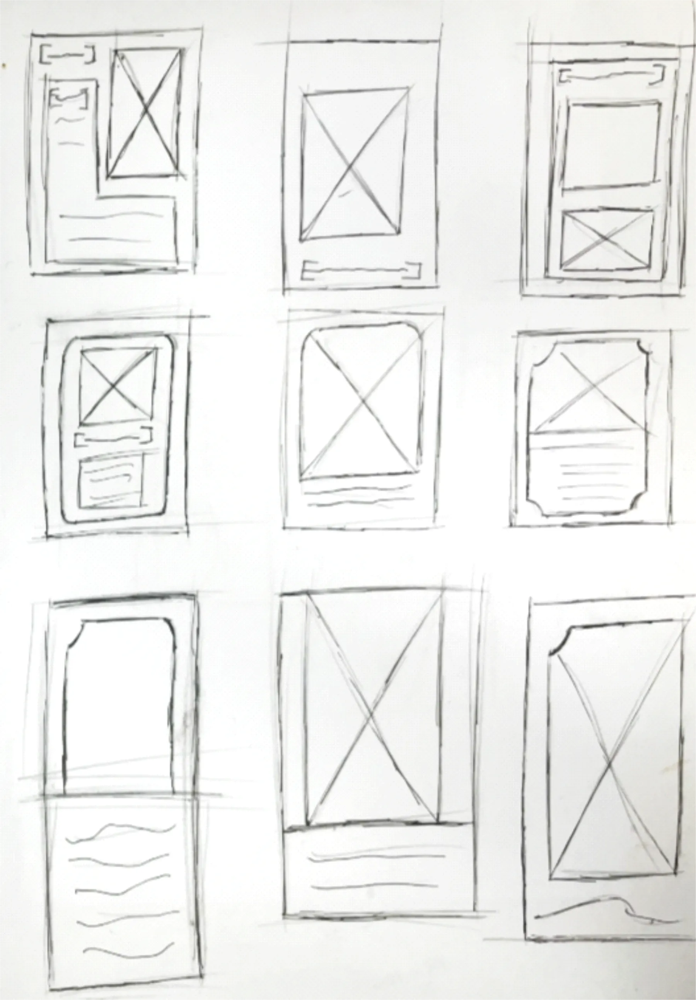
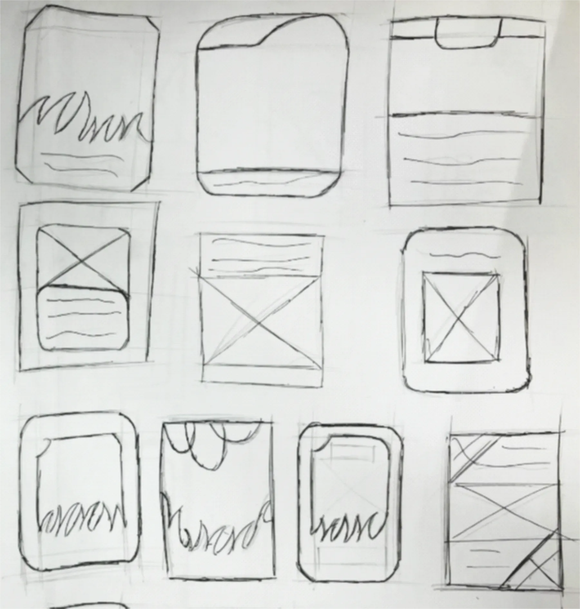
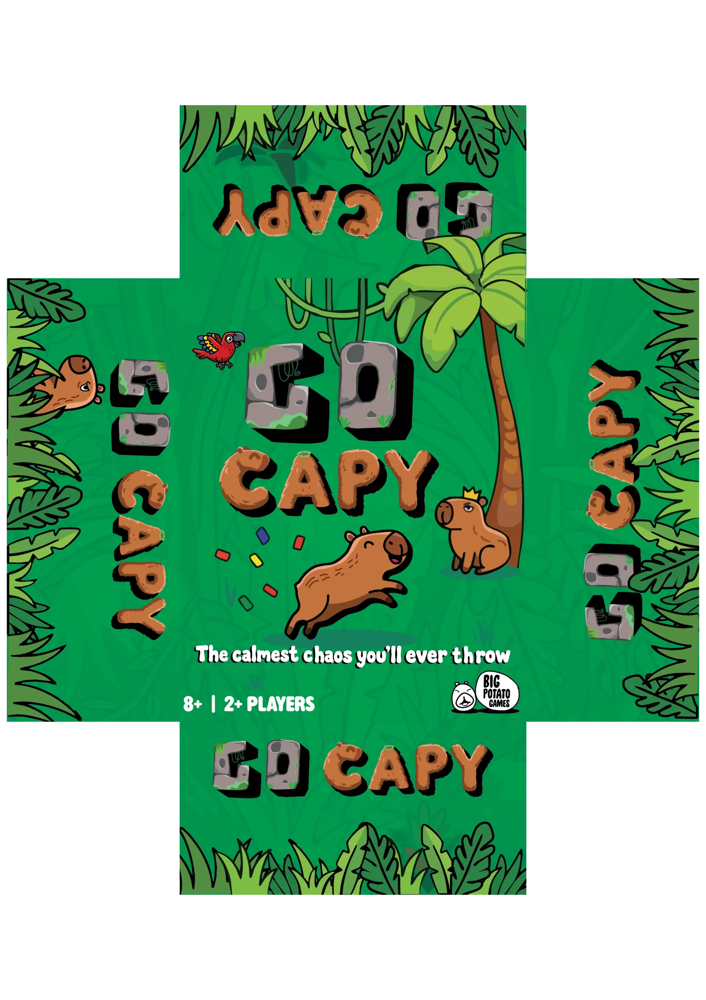
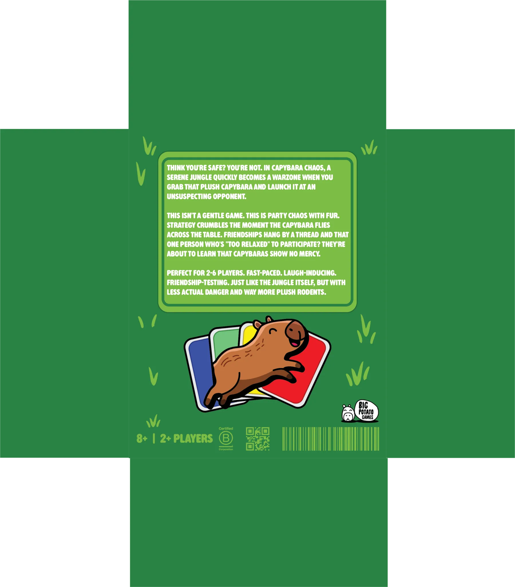

GO CAPY!
Go Capy is a fast card game with a flying capybara plush. Everyone secretly races to hoard exactly ten cards or get down to zero, while the plush can be thrown at anyone, at any moment. Drop it and you take a penalty.
The brief: design a new party game for Big Potato Games that uses little or no language. It must take five minutes to learn and thirty minutes to play, minimise downtime, and avoid typical board game themes such as trains and cowboys.
- Client
- Big Potato Games
- Module
- Toy & Game Design, Year 2
- Players
- 2 to 8, ages 8+, 15 to 25 minutes
- Bill of materials
- £3.85 per game


Reading the client
Big Potato Games is a London company, founded in 2014, that makes quick party games like Herd Mentality and The Chameleon. Their games follow three rules: they take less than two minutes to explain, they are about talking to each other rather than trivia, and nobody is left waiting. Their boxes work like billboards, with clean layouts, bright colours and funny, simple characters.
Research through play
I ran game nights and played at the Dice Saloon board game café to see what keeps a table engaged. Fast card games held attention best, because a turn takes seconds. Kerplunk had too much waiting, and Risk simply took too long. Bigger groups lost focus as the gap between turns grew, and stopping to check the rules killed the energy every time.
I also broke down three hits. Throw Throw Burrito has no turns at all, which removes waiting, but needs a lot of space and wrecks its cards. Exploding Kittens builds tension and takes under two minutes to learn, but eliminated players sit out. OK Play's rules take ten seconds to explain, but games with two experienced players turn into blocking. The design goals that came out of this were simultaneous play, a physical element, rules under five minutes, and a theme that is trending now. Capybaras were everywhere in shops.
Choosing a concept
I developed three concepts: Hop It, an outdoor disc-toss game where everyone throws at once and can steal points; Cornered, a corner-matching tile game; and Go Capy. Playtesters found Cornered "too easy to draw" and hard to read for colourblind players. I scored all three against the brief:
| Criteria | Hop It | Cornered | Go Capy |
|---|---|---|---|
| Meets the brief | 4 | 3 | 5 |
| Dexterity element | 5 | 1 | 5 |
| Party game appeal | 4 | 3 | 5 |
| Language independence | 5 | 5 | 4 |
| Manufacturing feasibility | 4 | 5 | 4 |
| Uniqueness | 3 | 3 | 5 |
| Brand fit | 4 | 3 | 5 |
| Total out of 35 | 29 | 23 | 33 |
Testing and the plush
The first version of Go Capy was a plain card game, tested with hand-written paper cards. Testers said there was "too much downtime", the cards looked "simple", the win condition was "too simple" and it felt "similar to other games".
Each piece of feedback led to a change. The capybara plush was added so anyone can throw it at any moment, which keeps the whole table alert even when it isn't their turn. The single goal became two opposite ones, ten cards or zero, so a move that helps you can hand someone else the win. The cards got wavy borders, bold text and bright colours. In the next round, with printed cards and a stand-in plush of roughly the planned size, the plush added exactly the chaos the brief asked for.


Card design
I looked at how Exploding Kittens, P for Pizza, Stomp Stomp Chomp and Taco Cat Goat Cheese Pizza use their cards: bright colours and icons that read at a glance, on stock thick enough to survive slapping and grabbing. I sketched card layouts until the illustration area, title and action text settled.


The final cards use dark borders, white text with yellow and red highlights, and a capybara drawing that shows what each card does before you read it. Mango Feast and Mosquito Swarm make players draw, which helps a hoarder but hurts someone racing to zero. Jungle Chase forces a two-card discard, and Sleep does nothing at all.
Sizing the plush
The plush has to be catchable by an 8-year-old and an adult. A small 8-year-old's hand is about 13.5cm long, and a large adult's is close to 20cm. A hard object small enough for a child to grip would be the size of a golf ball, frustrating for an adult to catch mid-game. A soft plush solves it: at 12 × 9.5cm it is a big target for adults, and its width squeezes down to 7cm so a child's fingers can overlap and grip it.
The face is flat embroidery instead of plastic safety eyes, which can crack on a hard floor or scratch a hand. The fabric and stuffing are 100% recycled PET. The game meets EN 71, UKCA and CE, and the plush on its own is safe from age 3.
Packaging
The box follows Big Potato's billboard approach: a bright green telescoping box, a chunky stacked title with a heavy shadow, and an alphabet-soup font to match the mood. I redrew Big Potato's mascot with a capybara snout and ears as a nod to the publisher. It is 100% recycled board with no plastic shrink wrap, and inside, a moulded pulp tray holds the cards and the plush.



| Component | Cost |
|---|---|
| Capybara plush, rPET fabric and fill, embroidered face | £1.40 |
| 72 playing cards, 310gsm FSC, matte varnish | £1.01 |
| Box lid and base, recycled pulp, CMYK litho | £0.55 |
| Hand packing and visual inspection | £0.35 |
| Moulded pulp inner tray | £0.25 |
| EN 71, UKCA and CE certification | £0.17 |
| 12-page rulebook, FSC stock | £0.12 |
| Total | £3.85 |
Reflection
The turning point was early playtesting. Seeing players get bored between turns is what led to the plush, and it changed the game from a card game into a party. It showed me a party game can be silly and still be built on real research, from hand-size data to recycled materials that meet Big Potato's sustainability standards.